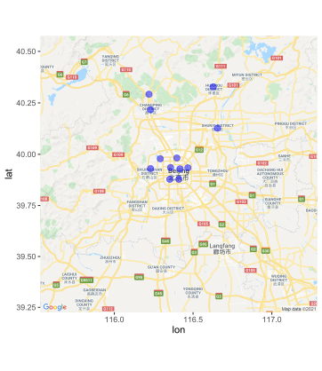

Project
Beijing Multi-Site Air-Quality Data Dataset
Source: UC Irvine Machine Learning Repository
Link: https://archive.ics.uci.edu/ml/datasets/Beijing+Multi-Site+Air-Quality+Data
Data Set Information:
This data set includes hourly air pollutants data from 12 nationally-controlled air-quality
monitoring sites. The air-quality data are from the Beijing Municipal Environmental Monitoring
Center. The meteorological data in each air-quality site are matched with the nearest weather
station from the China Meteorological Administration. The time period is from March 1st, 2013
to February 28th, 2017. Missing data are denoted as NA.
Atribute Information:
No: row number
year: year of data in this row
month: month of data in this row
day: day of data in this row
hour: hour of data in this row
PM2.5: PM2.5 concentration (ug/m^3)
PM10: PM10 concentration (ug/m^3)
SO2: SO2 concentration (ug/m^3)
NO2: NO2 concentration (ug/m^3)
CO: CO concentration (ug/m^3)
O3: O3 concentration (ug/m^3)
TEMP: temperature (degree Celsius)
PRES: pressure (hPa)
DEWP: dew point temperature (degree Celsius)
RAIN: precipitation (mm)
wd: wind direction
WSPM: wind speed (m/s)
station: name of the air-quality monitoring site
Existing Analysis
A quick Google search reveales several statistical analyses with Beijing air quality data, though the years and
content vary.
Proposal
My original plan was to use the location of the stations to explore unsuperviced clustering techinques. But
as you can see from the map, there aren't well distributed nor are there enough of them. I'm pivoting
to explore the relationships between the PM2.5 and windspeed/direction. I'll be exploring their relationships
withing the same station and I'll also group the stations in the urban areas with the stations in the suburbs.
Geolocation
I first found the geolocations of the stations and then used the ggmap library to map them.
register_google(key = [google api key])
data <- read_csv("data/station_locations.csv")
myMap <- get_map(location=myLocation, maptype="roadmap", zoom=9)
ggmap(myMap)+
+ geom_point(aes(x = Longitude, y = Latitude), data = data, alpha=.5, color="blue", size=3)
